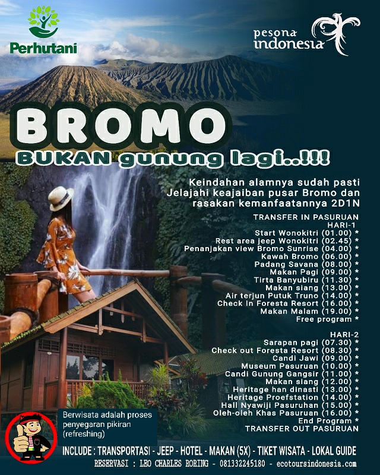

Mount Bromo is a beautiful tourist destination in the Province of East Java.
Taking this tour, visitors will be able to see the magnificent beauty of Mount Bromo and its surrounding environment as well as visit historical sites of Pasuruan that during the colonial period were part of Dutch economic locomotives.
Day 1 The tour will start from Pasuruan city
Day 2
Price: 1,200,000 rupiahs per person for a minimum 4 people. The price may anytime change due to economic situation in places that will be visited. So, we advice that anuone who is interested in the tour to book in advance.
Please, note that the cost does not include transfer cost from outside of Pasururan town. However, prior to the tour, we could organize your transfer by car from Surabaya city to Pasuruan town and then at the end of the tour we could arrange your transfer by car back to Surabaya city or other towns on separate cost.